第十三批：iPad旋转与就绪导出控件
这里展示实际打开并保留的原始 PNG，未裁切、改色或重绘。files-initial、rotation、files、files-ax、files-zh、files-ax-final 与 full 来自独立运行，各自实际受测源码分别列于收据；失败诊断另外保留，不混入成功原图数量。完整下载数量不等于逐张视觉检查数量，具体清单及全部截图哈希见收据。
验收报告及限制 · 来源与检查收据 · 上一批原图
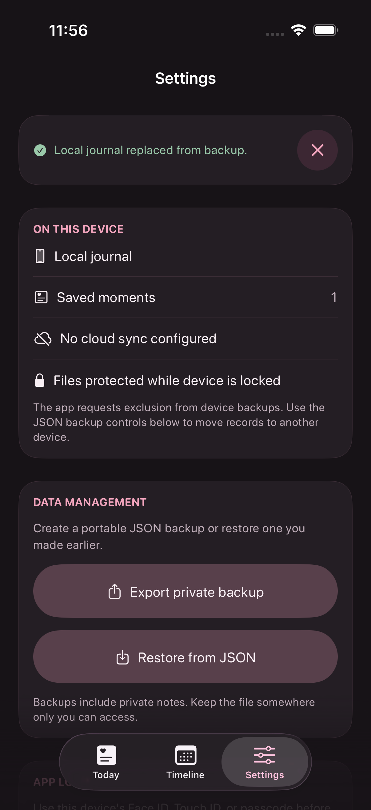
files-initial / phone-dark / Backup-restored-en
显示 1206 × 2622；原始像素 1206 × 2622；EXIF 1
d948153738317ca6792af17daea218262a3cf1ffa2667f4c5e5c8a7deaefdc9e
files-initial / phone-dark / Backup-replace-en
显示 1206 × 2622；原始像素 1206 × 2622；EXIF 1
37a45aa78d7779be3d39082c93b4bbc44692eec1fd270796da09987ac9dad9f6
files-initial / phone-dark / Replace-review-en
显示 1206 × 2622；原始像素 1206 × 2622；EXIF 1
18b204cdc1740a26c1ab41eb6bb69f6d0fe6bfb71c7868f1f0431ddc1c2346fc
files-initial / phone-dark / Backup-review-controls-en
显示 1206 × 2622；原始像素 1206 × 2622；EXIF 1
7f9a429561134d212843327cb97e9b1380970e5621390dc7c55afaf0d5c80f24
files-initial / phone-dark / Backup-review-en
显示 1206 × 2622；原始像素 1206 × 2622；EXIF 1
51665b2b09c7e5c07cee2fdb4171160d0baabbe61aa6a4cf5d01a56a9455d136
files-initial / phone-dark / Import-cancelled-en
显示 1206 × 2622；原始像素 1206 × 2622；EXIF 1
00b782a3541a62c835e94c5712c49058bcc35737e6d1007391abb23a8460a2a3
files-initial / phone-dark / Import-files-en
显示 1206 × 2622；原始像素 1206 × 2622；EXIF 1
69a7740975fb5288c6943b411296ea71523473e2a29a7c69905b7c0252a2da55
files-initial / phone-dark / Backup-exported-en
显示 1206 × 2622；原始像素 1206 × 2622；EXIF 1
6000edd60932d8b91166e70d5950824e7d6003b87a45e9f0676ce8b8533adc7a
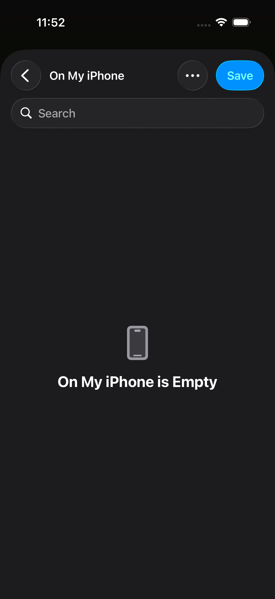
files-initial / phone-dark / Export-files-en
显示 1206 × 2622；原始像素 1206 × 2622；EXIF 1
0584948bfce705b653e82e0cb31df812a7825a2d2c51a32b541d1197182b8967
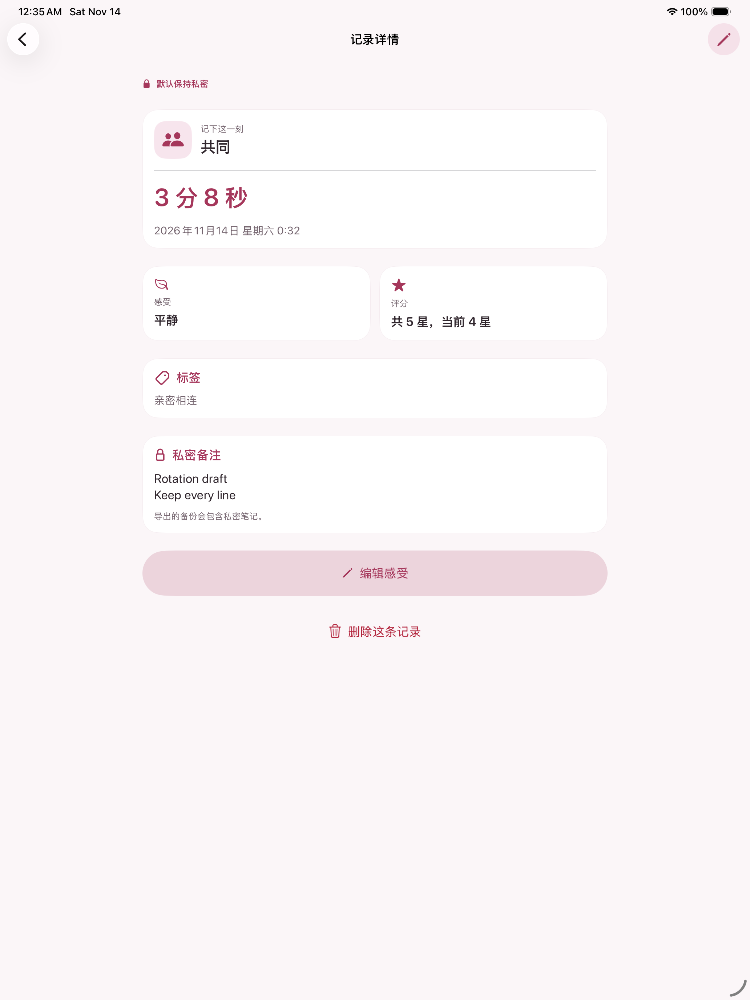
rotation / ipad-light / Rotation-relaunched-portrait-zh-Hans
显示 2064 × 2752；原始像素 2064 × 2752；EXIF 1
3046adada85654c569d565838a4b3ac18b20aca7fc05a73619aece266eaaba57
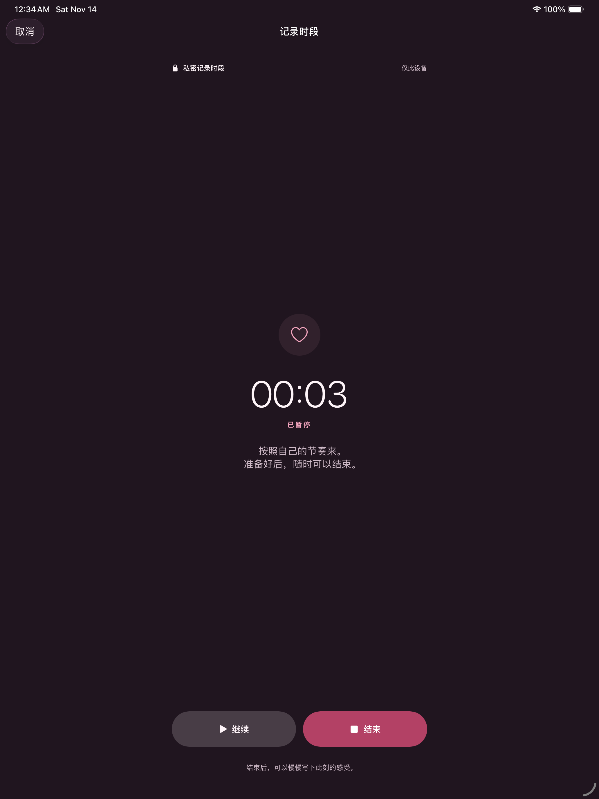
rotation / ipad-light / Rotation-timer-portrait-zh-Hans
显示 2064 × 2752；原始像素 2064 × 2752；EXIF 1
a747928b906eea54ed8bfedae2891c1f662b6afd4e0174ae28c8d498f45f83c1
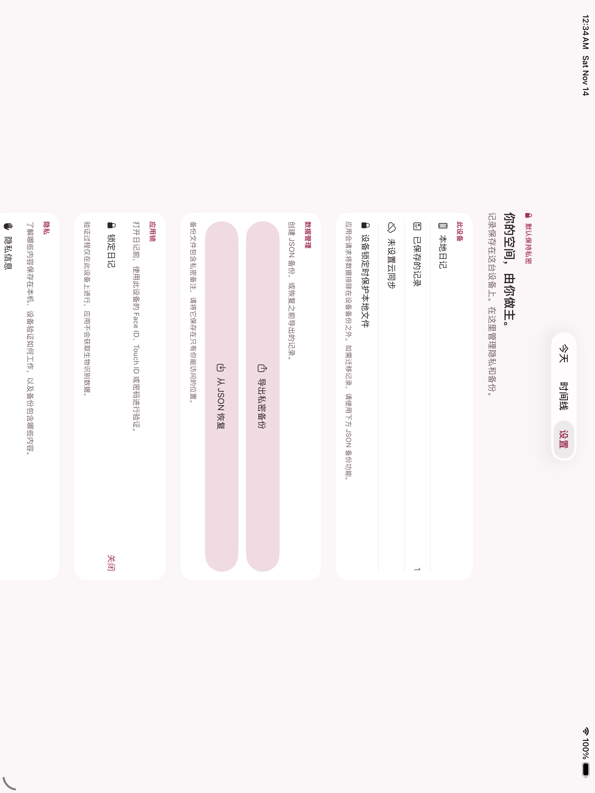
rotation / ipad-light / Rotation-settings-landscape-zh-Hans
显示 2752 × 2064；原始像素 2064 × 2752；EXIF 8
c039f15528b43f4847403d057d80edc3777a2c8a1164939c4972b332a474f431
rotation / ipad-light / Rotation-detail-portrait-zh-Hans
显示 2064 × 2752；原始像素 2064 × 2752；EXIF 1
f07be423f930ef3b4464ad7179b6ce57d5deb92726b6c0dd69bf5af783a2a9a6
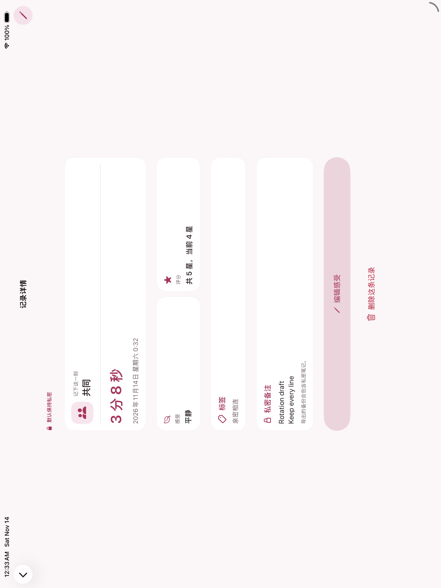
rotation / ipad-light / Rotation-detail-landscape-zh-Hans
显示 2752 × 2064；原始像素 2064 × 2752；EXIF 6
fbf775db509f80cf1ace51c4ce94e42cf8f6c538fb264c0a8a8e91805830383d
rotation / ipad-light / Rotation-timeline-landscape-zh-Hans
显示 2752 × 2064；原始像素 2064 × 2752；EXIF 8
5176a2052cd527acbe6c4c1415726ee069d4e61d47a3859d0041284efe852def
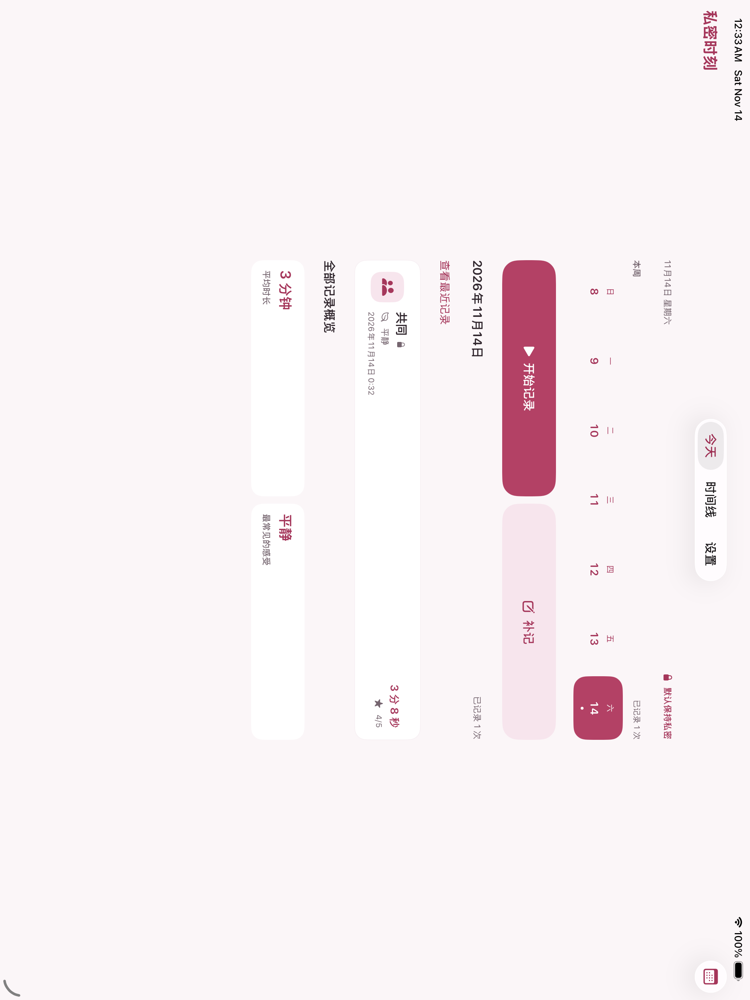
rotation / ipad-light / Rotation-today-landscape-zh-Hans
显示 2752 × 2064；原始像素 2064 × 2752；EXIF 8
3d37b86f7cdf5e5954849b3578796df4ba636f46ce3dc5ccc77dbb3c3a76bd92
rotation / ipad-light / Rotation-draft-portrait-zh-Hans
显示 2064 × 2752；原始像素 2064 × 2752；EXIF 1
1732bf0ee1085dc9ad91a0f1e55cddae17e94cc3e21f0cc0877048f850083e7d
rotation / ipad-light / Rotation-discard-confirm-zh-Hans
显示 2752 × 2064；原始像素 2064 × 2752；EXIF 8
cc6e1562713bd79a503cc5ef04be22f09ef200f6e6ce1040216eb9b20c718ccd
rotation / ipad-light / Rotation-draft-landscape-zh-Hans
显示 2752 × 2064；原始像素 2064 × 2752；EXIF 8
971f81e014e419c294da1b841b1d849d534a272a9553037553438c9fda2a705b
rotation / ipad-light / Rotation-relaunched-portrait-en
显示 2064 × 2752；原始像素 2064 × 2752；EXIF 1
75301c8c63f0fa07c43a2830d45ecfd7cd5b37c986f53b65adcd991b2ca981f8
rotation / ipad-light / Rotation-timer-portrait-en
显示 2064 × 2752；原始像素 2064 × 2752；EXIF 1
7b7811c146637d1da184e45e0c9f738d88b5f7f9e70851ac3c9a92fe380fbaa7
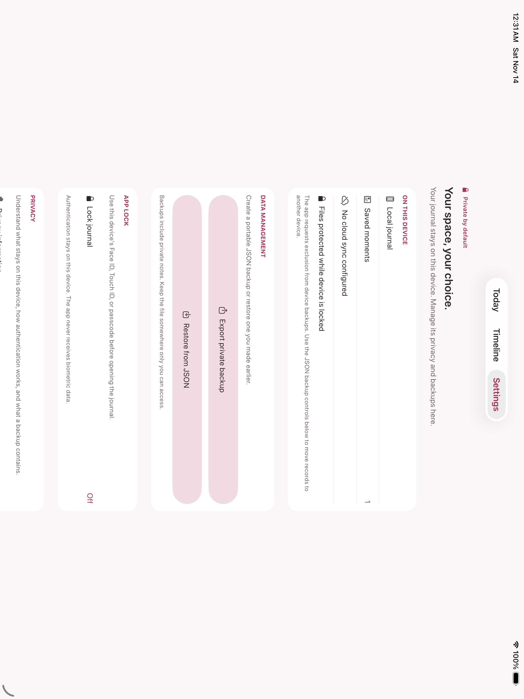
rotation / ipad-light / Rotation-settings-landscape-en
显示 2752 × 2064；原始像素 2064 × 2752；EXIF 8
60c5508743fc373a8606135903628dc5d88f5f9ed52b49b92ebb6701006c66e6
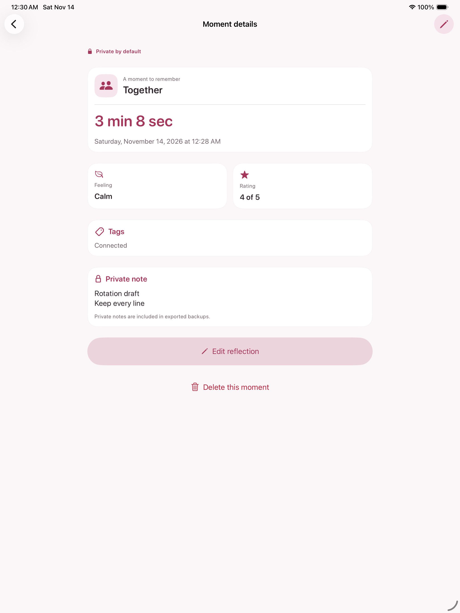
rotation / ipad-light / Rotation-detail-portrait-en
显示 2064 × 2752；原始像素 2064 × 2752；EXIF 1
290a8fe62be46b6091434aaf650de62501ed844c74e629b35f3c7e6da4701dcb
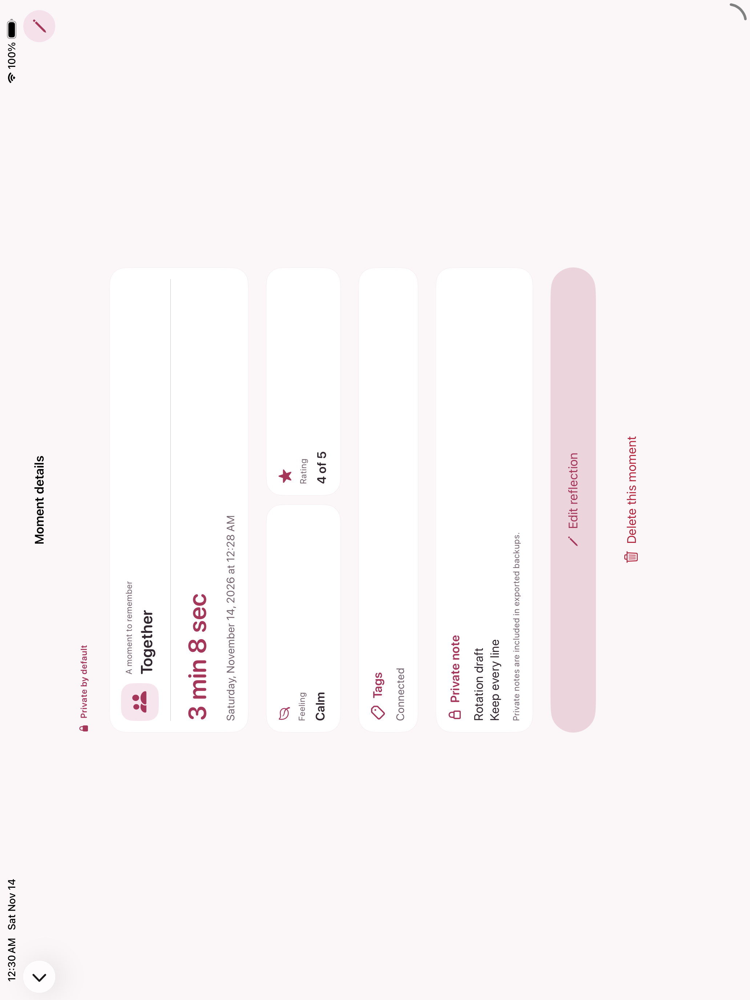
rotation / ipad-light / Rotation-detail-landscape-en
显示 2752 × 2064；原始像素 2064 × 2752；EXIF 6
9f83a4aebd6b6b83aa1ef19927e4030445d13aaddacca0c5af20db8399c329cb
rotation / ipad-light / Rotation-timeline-landscape-en
显示 2752 × 2064；原始像素 2064 × 2752；EXIF 8
df7802dfe03e42400737d45ee84cfef5a554d7eddc5fd6f0cf13bd7c122a744a
rotation / ipad-light / Rotation-today-landscape-en
显示 2752 × 2064；原始像素 2064 × 2752；EXIF 8
06a57d3fac88e4eae46b7c5a98f279b9dfffc0d56731dc732067ddb17f09f0b4
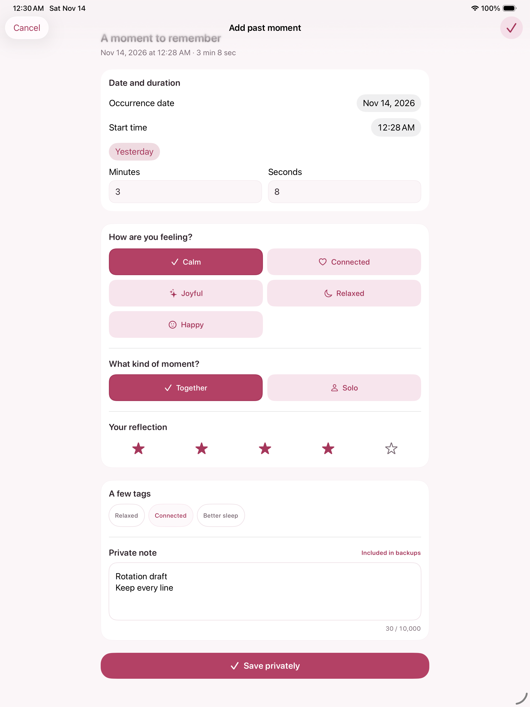
rotation / ipad-light / Rotation-draft-portrait-en
显示 2064 × 2752；原始像素 2064 × 2752；EXIF 1
75cb49922b53424c7adeee1fc0bf7081a8ce4a697ca27ddb827c062dad93686d
rotation / ipad-light / Rotation-discard-confirm-en
显示 2752 × 2064；原始像素 2064 × 2752；EXIF 8
0e1ba97ea1af1c8654ed5f1674a64eb233990fe3d973f31a86cdc15af04419c3
rotation / ipad-light / Rotation-draft-landscape-en
显示 2752 × 2064；原始像素 2064 × 2752；EXIF 8
e5b122f4933264ad3b3476eaa44ca12374f0386f54cc395350b5bf661cfd8363
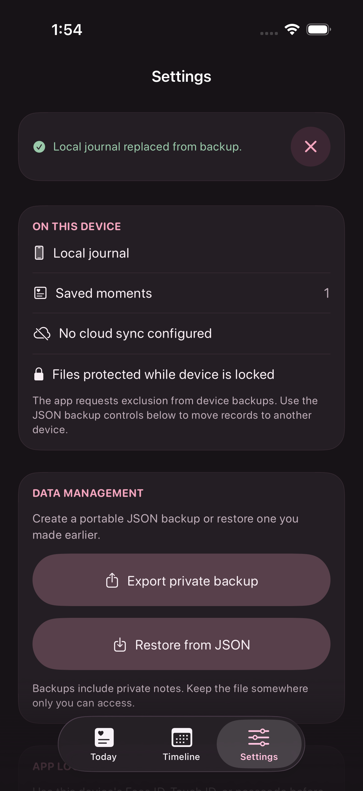
files / phone-dark / Backup-restored-en
显示 1206 × 2622；原始像素 1206 × 2622；EXIF 1
05c8b9d0c41231c058b0e9a8209294a29e10e7d5e96a01032435f73ffafd823f
files / phone-dark / Backup-replace-en
显示 1206 × 2622；原始像素 1206 × 2622；EXIF 1
70cc242b3bc53a865c61a0d135f9327e2f24fab424b28946c3770c170a6a4100
files / phone-dark / Replace-review-en
显示 1206 × 2622；原始像素 1206 × 2622；EXIF 1
4c5f1dd533970529625aeef395ceb523d740fd76687344c1ee7b0fe093a94471
files / phone-dark / Backup-review-controls-en
显示 1206 × 2622；原始像素 1206 × 2622；EXIF 1
b1a74bcb9861910b575234214fb5e9ba765a256f42b9eff6ca837a3f32ce7496
files / phone-dark / Backup-review-en
显示 1206 × 2622；原始像素 1206 × 2622；EXIF 1
71f824094fd738822a01246fed731dd1fb8eb9c061cb22d5b5935514a9d51a32
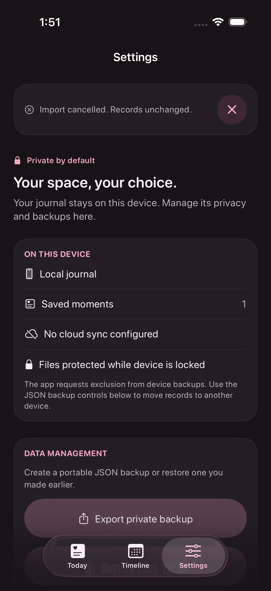
files / phone-dark / Import-cancelled-en
显示 1206 × 2622；原始像素 1206 × 2622；EXIF 1
2ff218cd9061f49bc6801f48ecc76e1930669c398998ea98d18288193287fb4a
files / phone-dark / Import-files-en
显示 1206 × 2622；原始像素 1206 × 2622；EXIF 1
047f0d052b0a40f7b258c3c719bbbe90a10f14a858cb7b8609d84e3d926c4c10
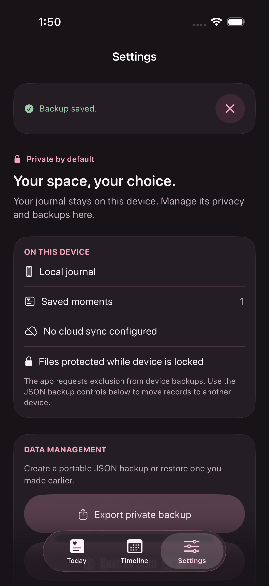
files / phone-dark / Backup-exported-en
显示 1206 × 2622；原始像素 1206 × 2622；EXIF 1
9a66e5a938d940921e4e25639cc5b1244b9b420bbba3e8345362c93906dcde6a
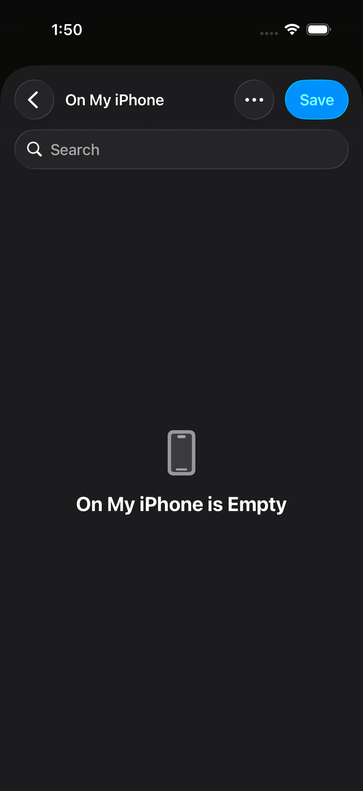
files / phone-dark / Export-files-en
显示 1206 × 2622；原始像素 1206 × 2622；EXIF 1
7115e7b21b23ffc72a47f7768cf673da08dac146e568b92aa8d9fd58587dc739
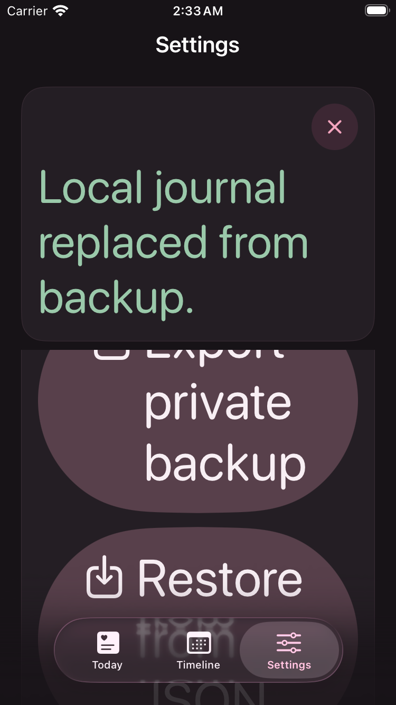
files-ax / compact-dark-accessibility / Backup-restored-en
显示 750 × 1334；原始像素 750 × 1334；EXIF 1
3885a563a640da502ba06de2bdde6ccbb47f0f7dc0fdc6da787353bfbeaae191
files-ax / compact-dark-accessibility / Backup-replace-en
显示 750 × 1334；原始像素 750 × 1334；EXIF 1
e26c6c9415b4a5d535a9e322e96fed5bcaa5595a3446ba0f22739b10a7a18212
files-ax / compact-dark-accessibility / Replace-review-en
显示 750 × 1334；原始像素 750 × 1334；EXIF 1
2a48cd4aa845848f2c6d15e5ecc2548e99787ff662e654d178d58f3f4361e6f7
files-ax / compact-dark-accessibility / Backup-review-controls-en
显示 750 × 1334；原始像素 750 × 1334；EXIF 1
0903354e5502752546f9ee3bf1647f81e0f54e3705490d1e648607c985fce36f
files-ax / compact-dark-accessibility / Backup-review-en
显示 750 × 1334；原始像素 750 × 1334；EXIF 1
4a76cbc7d932ddd085d622b2b513338c984f6d83bbb93531fb8124451af70edc
files-ax / compact-dark-accessibility / Import-cancelled-en
显示 750 × 1334；原始像素 750 × 1334；EXIF 1
e56d4a13b268a253576fd09a52417581ae0f3c0dda2b5489f53e5de9be397e0a
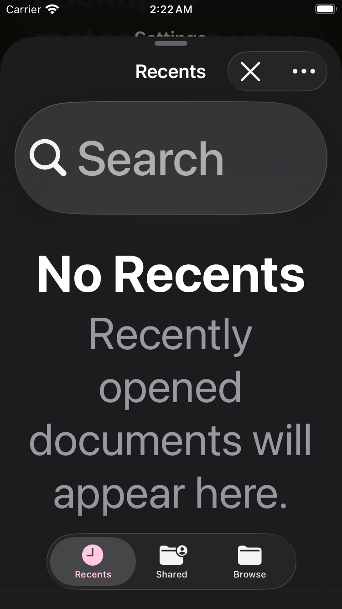
files-ax / compact-dark-accessibility / Import-files-en
显示 750 × 1334；原始像素 750 × 1334；EXIF 1
1dcae8400481832174fcf9754a8325ddc6d5da7e69542648287dd41eec1f6c25
files-ax / compact-dark-accessibility / Backup-exported-en
显示 750 × 1334；原始像素 750 × 1334；EXIF 1
3025558472579c480f4187e78733a10909c6edb0a4b9fb1f9623c5af584aa2d0
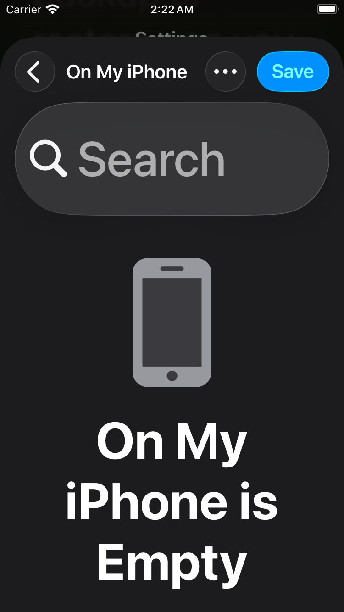
files-ax / compact-dark-accessibility / Export-files-en
显示 750 × 1334；原始像素 750 × 1334；EXIF 1
6413ef821afeb644243f384b0cfcc8c746e03225f1cbcbf284e470c17c85a7c2
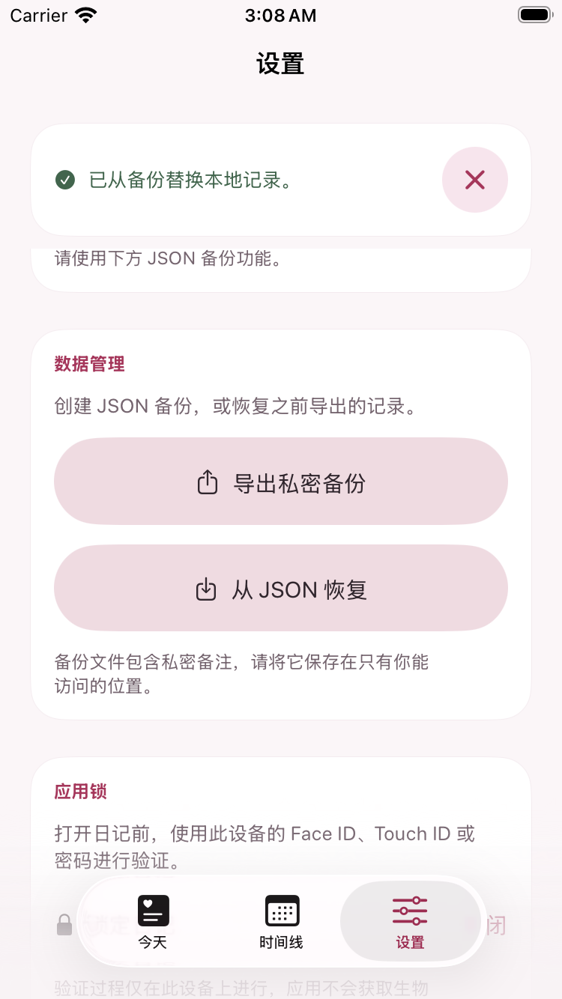
files-zh / compact-light / Backup-restored-zh-Hans
显示 750 × 1334；原始像素 750 × 1334；EXIF 1
6fa9a91d062b63b883eae6a6c0212e8ab4abebb7a8a62f03fe02c8af03006610
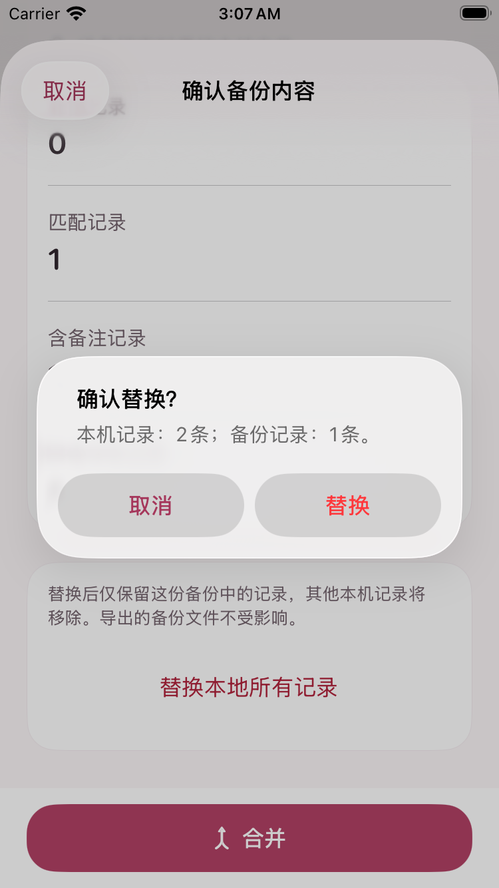
files-zh / compact-light / Backup-replace-zh-Hans
显示 750 × 1334；原始像素 750 × 1334；EXIF 1
63387d22c8af78750ce85960228b53031247e007b7f92158538f09b6dd7205aa
files-zh / compact-light / Replace-review-zh-Hans
显示 750 × 1334；原始像素 750 × 1334；EXIF 1
21116e428f31650dcb63f69e2f5b47a98c346c1bfb2ea59816e38b3fdf5e6b1d
files-zh / compact-light / Backup-review-controls-zh-Hans
显示 750 × 1334；原始像素 750 × 1334；EXIF 1
e68473392b26fc608b8735af399feab9026fc1a53e45ecdf313367d52461f5c0
files-zh / compact-light / Backup-review-zh-Hans
显示 750 × 1334；原始像素 750 × 1334；EXIF 1
24f447e89a0cae732f1738cf9eef49f77e6fb34e76837319f4f0821e66f18f0b
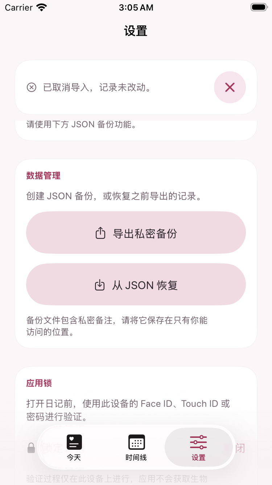
files-zh / compact-light / Import-cancelled-zh-Hans
显示 750 × 1334；原始像素 750 × 1334；EXIF 1
d0484c60995cf0a76464ae2983c3068595ee70a54eeba58d996d8afcdc8eae4e
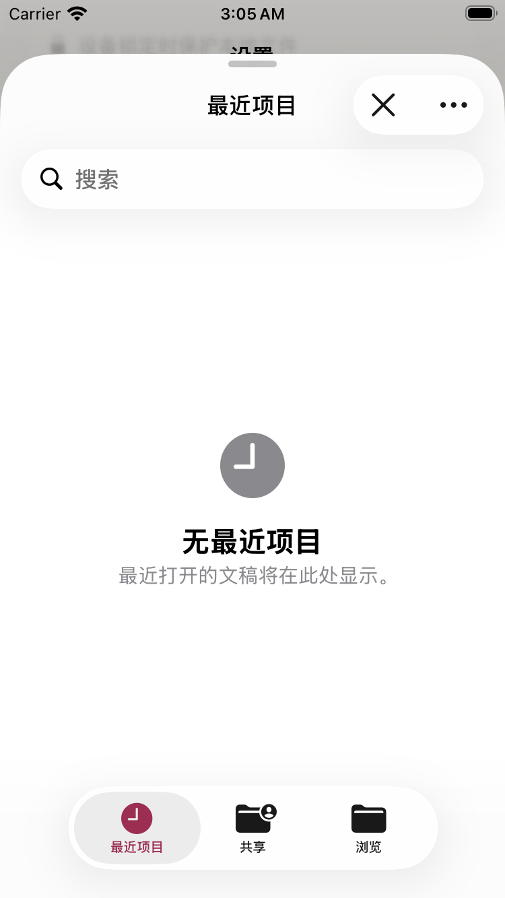
files-zh / compact-light / Import-files-zh-Hans
显示 750 × 1334；原始像素 750 × 1334；EXIF 1
3b497da5427095cb3602fdd0ed5bd30db1953f5c4f9cdf4e6eba58727c5e38d9
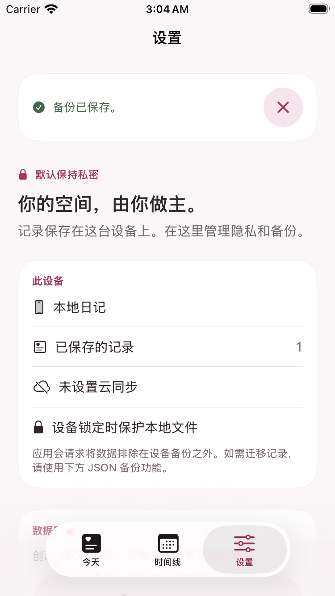
files-zh / compact-light / Backup-exported-zh-Hans
显示 750 × 1334；原始像素 750 × 1334；EXIF 1
6eefa631e8bbe9500270e57eea141c6d2264ecf7141206a7847625af2d9d879b
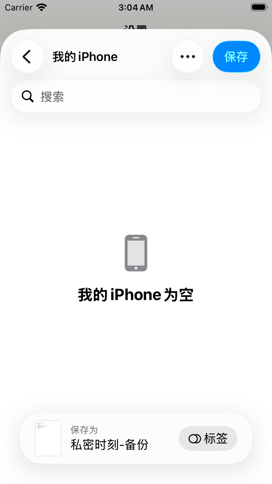
files-zh / compact-light / Export-files-zh-Hans
显示 750 × 1334；原始像素 750 × 1334；EXIF 1
623548676c734114c60f7002c479f85249ae8ca524d1e8565dcc6e4ec2f5130b
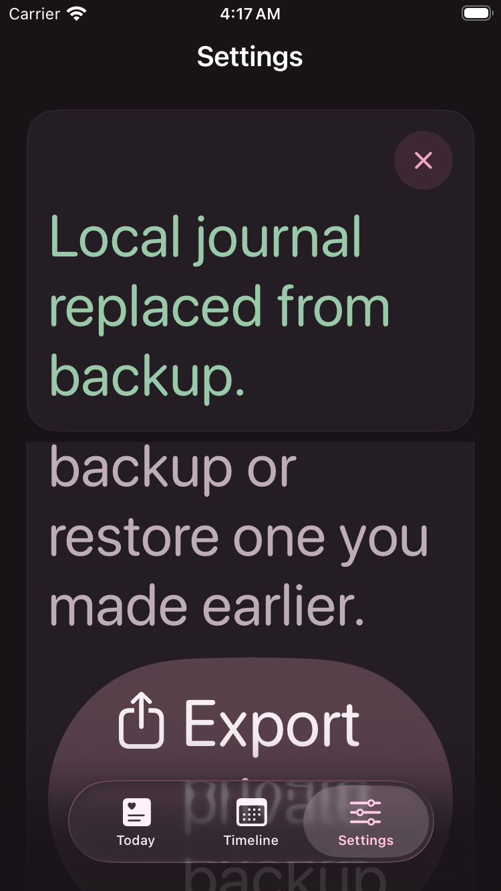
files-ax-final / compact-dark-accessibility / Backup-restored-en
显示 750 × 1334；原始像素 750 × 1334；EXIF 1
34fcac67afd94e5212fed063dc2eef24f046632bf3ae235034d384ddd8e72b18
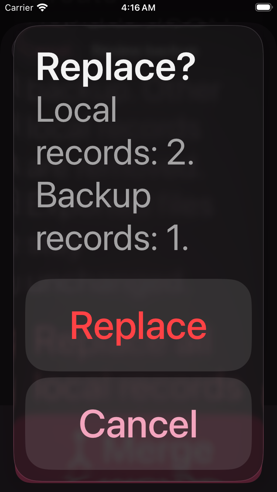
files-ax-final / compact-dark-accessibility / Backup-replace-en
显示 750 × 1334；原始像素 750 × 1334；EXIF 1
12cfe324da6870304439429a15f5f821cdc5ce952bd397c4162ff3db3aed295f
files-ax-final / compact-dark-accessibility / Replace-review-en
显示 750 × 1334；原始像素 750 × 1334；EXIF 1
70f1efe40473e35b7038793da170ff78e42177052256e0de8acdae501ec9584d
files-ax-final / compact-dark-accessibility / Backup-review-controls-en
显示 750 × 1334；原始像素 750 × 1334；EXIF 1
5d5ee717da7c202c9c65e5dc9e6c0ab46639394acbeed027be544cdb7b97211a
files-ax-final / compact-dark-accessibility / Backup-review-en
显示 750 × 1334；原始像素 750 × 1334；EXIF 1
e43676d253c01cbdf36deb5273666ee9a0a6cd0ba0805cb4dffd95973068a3b8
files-ax-final / compact-dark-accessibility / Import-cancelled-en
显示 750 × 1334；原始像素 750 × 1334；EXIF 1
66e37ee75cee3606b4cbe15d05671438be2700ff9c953d5cc41a5be327996a5d
files-ax-final / compact-dark-accessibility / Import-files-en
显示 750 × 1334；原始像素 750 × 1334；EXIF 1
c92d0f4e76808868e5f4657d2754af67358a5faa08f2b6e6b9581e81ba20967f
files-ax-final / compact-dark-accessibility / Backup-exported-en
显示 750 × 1334；原始像素 750 × 1334；EXIF 1
18b2b6b2d7594916821e4c614c680deff65f23746fee748739a1ec66dbd3cf3a
files-ax-final / compact-dark-accessibility / Export-files-en
显示 750 × 1334；原始像素 750 × 1334；EXIF 1
1fba8d80d9be4e8fa41536759450e65068261485a7331272933d00defba0ad10
full / compact-dark-accessibility / Backup-restored-en
显示 750 × 1334；原始像素 750 × 1334；EXIF 1
ef55a1528efebb28ab1544066498b9a5db928cf449f41cd905e91680b25f7198
full / compact-dark-accessibility / Backup-replace-en
显示 750 × 1334；原始像素 750 × 1334；EXIF 1
e8b3cf292e95788f7227321fdc4d5dc0d4005a2778671962e12f2f6d64349814
full / compact-dark-accessibility / Replace-review-en
显示 750 × 1334；原始像素 750 × 1334；EXIF 1
dd271bb2d905fdeb7b4a78031655436d7470c856493bd322f9db510075d32af2
full / compact-dark-accessibility / Backup-review-controls-en
显示 750 × 1334；原始像素 750 × 1334；EXIF 1
444cb4b20a043e93c376aa06efb37328a17153d98d61484d762938e780f304be
full / compact-dark-accessibility / Backup-review-en
显示 750 × 1334；原始像素 750 × 1334；EXIF 1
5b5d6968ee5814817038dff4ca7e6c5244d89b93ead442391b4e12476f08ff0e
full / compact-dark-accessibility / Import-cancelled-en
显示 750 × 1334；原始像素 750 × 1334；EXIF 1
f0c383e4e3ffdad08897997967cb24c67a6ab26940d633d218333709be193b87
full / compact-dark-accessibility / Import-files-en
显示 750 × 1334；原始像素 750 × 1334；EXIF 1
1fc4e13c14162dd1643ed25e2038e9ebd30fb54a99d9568859333099397d9028
full / compact-dark-accessibility / Backup-exported-en
显示 750 × 1334；原始像素 750 × 1334；EXIF 1
a9734996356174d7cdf772e7a570630e6fbc82f092cf5e8a11c0e04be4aea9a8
full / compact-dark-accessibility / Export-files-en
显示 750 × 1334；原始像素 750 × 1334；EXIF 1
9cdde46048de0232076cc89fa49d6b4ff4934f9ca5dc7e050b961f1efc8e24d9
full / compact-dark-accessibility / Lock-recovery-zh-Hans
显示 750 × 1334；原始像素 750 × 1334；EXIF 1
dee66f5822036166656fa2351d8b0766d04a9d0d90e9aa290d3a592b85445624
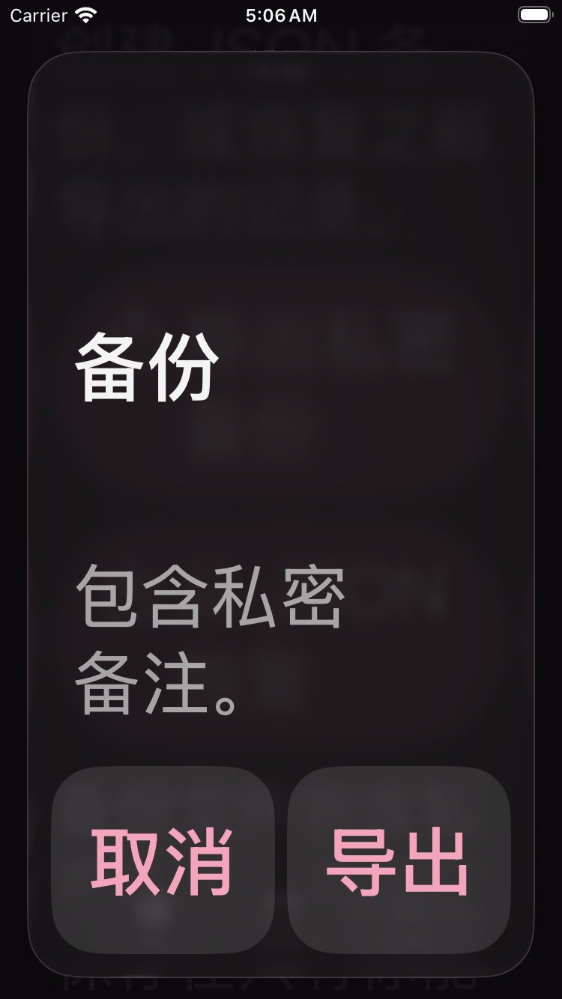
full / compact-dark-accessibility / Backup-warning-zh-Hans
显示 750 × 1334；原始像素 750 × 1334；EXIF 1
282b932467f5bdd0c111807b548debdbd7f51e3082a43b98bb5bed1ac3b74ff6
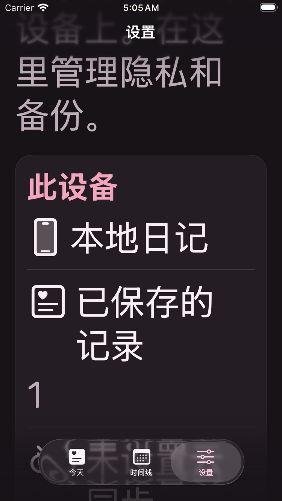
full / compact-dark-accessibility / Settings-values-zh-Hans
显示 750 × 1334；原始像素 750 × 1334；EXIF 1
782c9cc6e3c1fd0f1585e87b656d6652a5ac7bebf1a91a9ea10d51e4057269fe
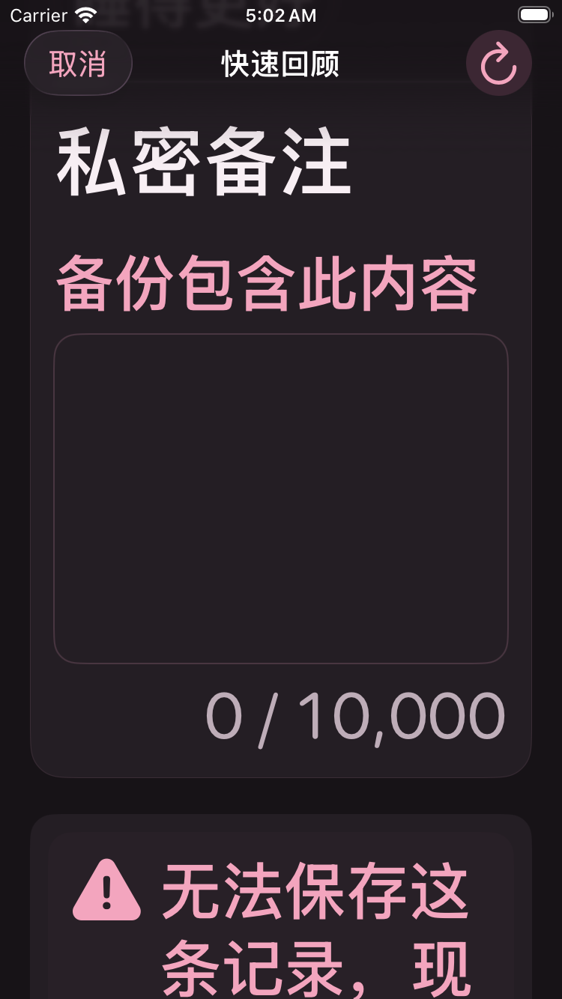
full / compact-dark-accessibility / Save-recovery-zh-Hans
显示 750 × 1334；原始像素 750 × 1334；EXIF 1
e25524c9d752a4cfe512be51fb23567e361eaeda09c5b4c0d4e1dc532dd07be7
full / compact-dark-accessibility / Recap-controls-zh-Hans
显示 750 × 1334；原始像素 750 × 1334；EXIF 1
4fccbb3f588bf970bc2de3a2de5ed17e2cbe74315ec4c9cc50642ce41665b9d6
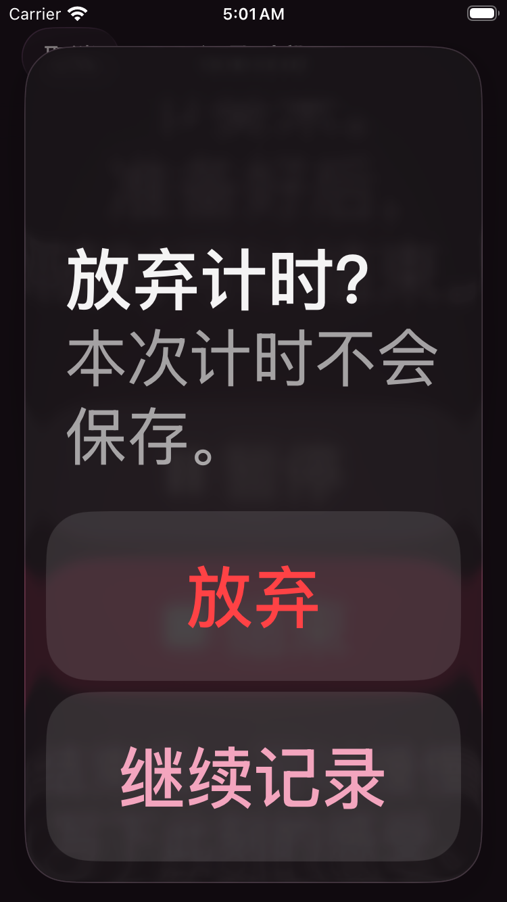
full / compact-dark-accessibility / Session-discard-confirm-zh-Hans
显示 750 × 1334；原始像素 750 × 1334；EXIF 1
e364fec2ce4a2045e0057c3ba6cdebb481e0e12bb2521d3ae8b76cf7957181d5
full / compact-dark-accessibility / Manual-note-retained-zh-Hans
显示 750 × 1334；原始像素 750 × 1334；EXIF 1
1fbd9db27a199d7ae7520cae081666b8a2890b18d3b09253cd1a29b54fe3c045
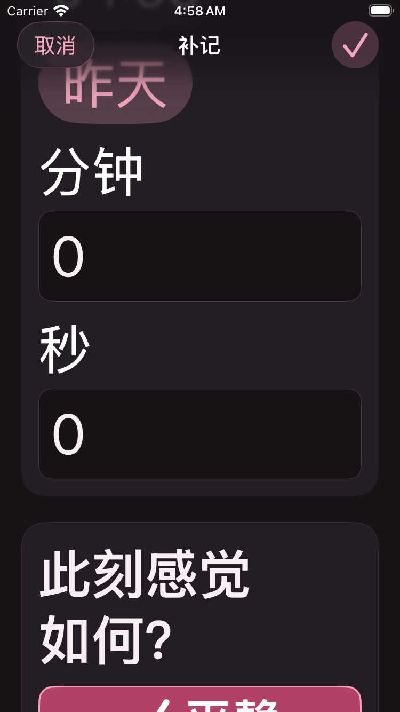
full / compact-dark-accessibility / Manual-duration-zh-Hans
显示 750 × 1334；原始像素 750 × 1334；EXIF 1
2bf345d465465ebe53393356adf314795779c6d6e24ed56f46c95adbedb5cf94
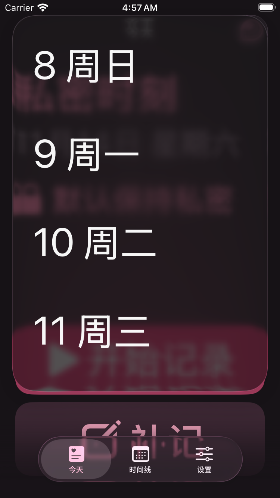
full / compact-dark-accessibility / Week-menu-zh-Hans
显示 750 × 1334；原始像素 750 × 1334；EXIF 1
8f92f5c0090fc7ad4622f6fe7d0d283979f94ab6b2c5bb55dfdcaeca9ad28e82
full / compact-dark-accessibility / Today-zh-Hans
显示 750 × 1334；原始像素 750 × 1334；EXIF 1
46351aee987768c6a1ba64d38c79edc68f6fe661255c0c4500fce1201745b954
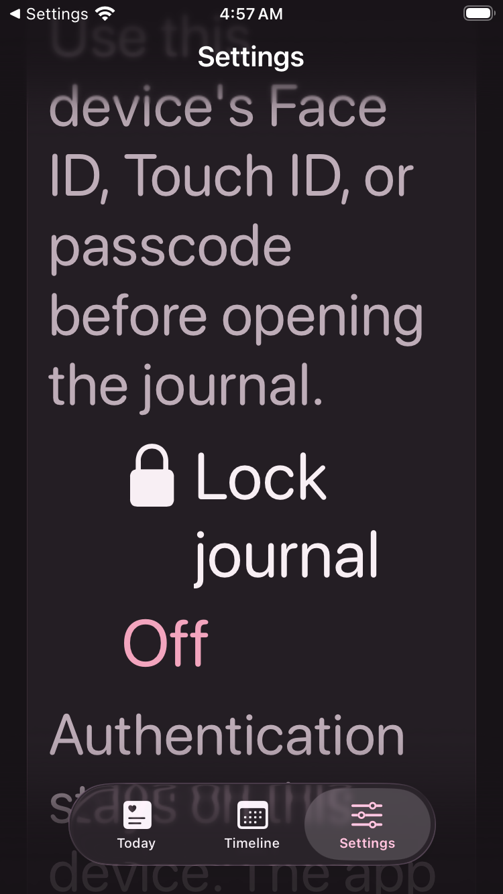
full / compact-dark-accessibility / Lock-recovery-en
显示 750 × 1334；原始像素 750 × 1334；EXIF 1
bc5acfad4179bc07027e2f114c312c3d8f9c0fd5d8f5aec6ee3e2a53dcfb1039
full / compact-dark-accessibility / Manual-duration-en
显示 750 × 1334；原始像素 750 × 1334；EXIF 1
5c6da6df5da65cb29f62a654dfa4dc5694738b1c64ad6c439df2988a595a6db8
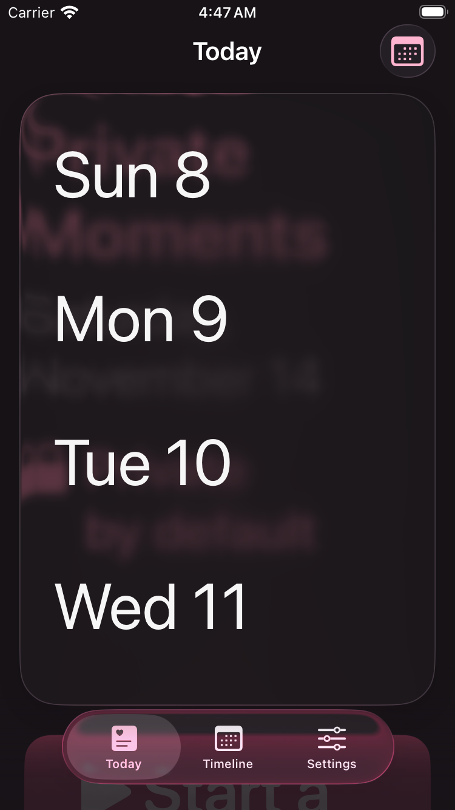
full / compact-dark-accessibility / Week-menu-en
显示 750 × 1334；原始像素 750 × 1334；EXIF 1
1dce83cd64a14ef336650a14d54d35fd639b8b1b813148260d611bb33a59fe2e
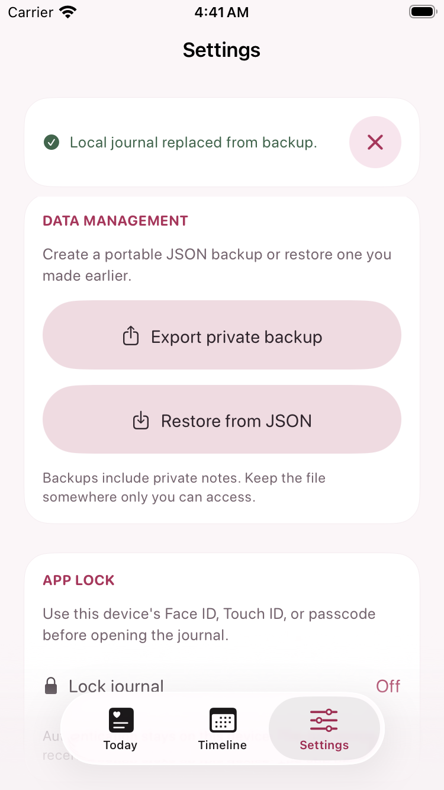
full / compact-light / Backup-restored-en
显示 750 × 1334；原始像素 750 × 1334；EXIF 1
21c1dd302be4b96ad0d53ec500df24983732f765cdc2f4dcfc4e605617c3f8d1
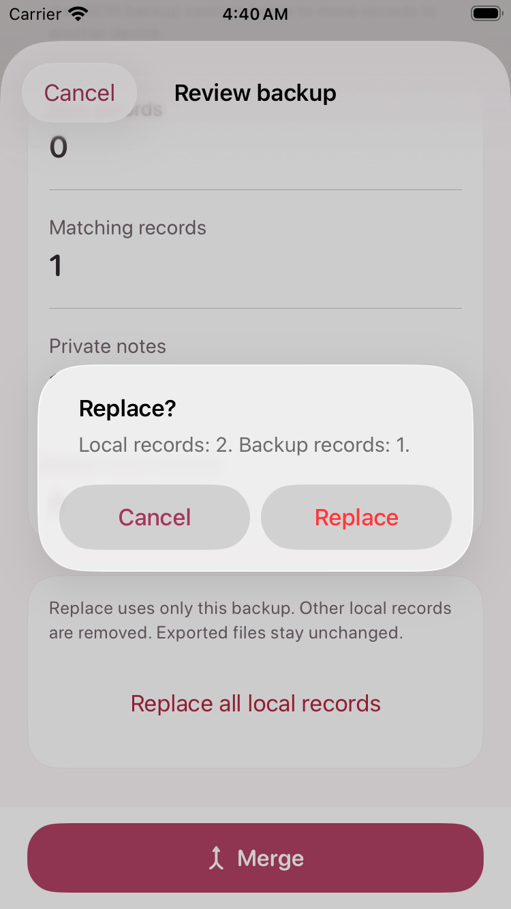
full / compact-light / Backup-replace-en
显示 750 × 1334；原始像素 750 × 1334；EXIF 1
5f01f72f4cef5ff139b08ad35e15a9d5f43b1a1034c112bf0b3f7cd23e025ba0
full / compact-light / Replace-review-en
显示 750 × 1334；原始像素 750 × 1334；EXIF 1
06254f845e529374bad231e5e2c0c6ee79999fa8db02b66a47e0b54d51eab902
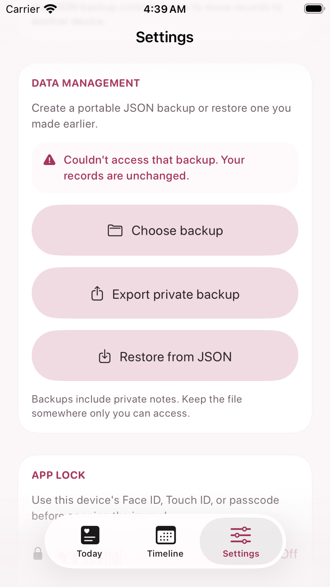
full / compact-light / Import-recovery-1-en
显示 750 × 1334；原始像素 750 × 1334；EXIF 1
f69eb3f47e5cdc5415af7e84a5ef1ee27906d175800c4cbd94bb48b804bb44ec
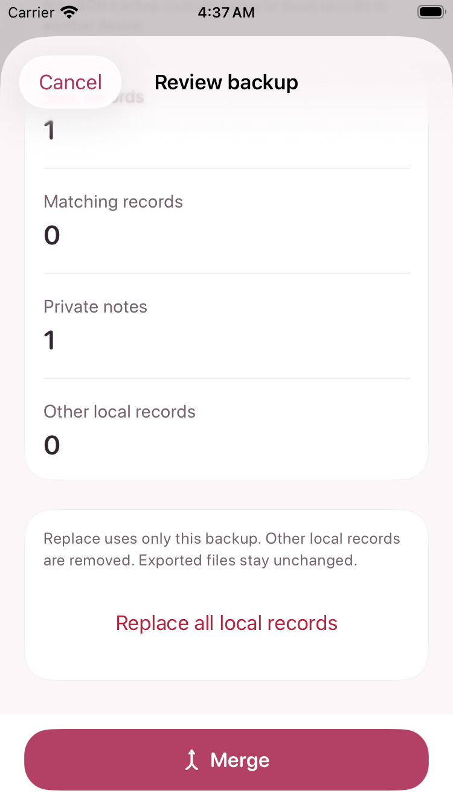
full / compact-light / Backup-review-controls-en
显示 750 × 1334；原始像素 750 × 1334；EXIF 1
59f3a336ebe6c157566986e5c9ae946a8a97cdc39f6a883d34caad894554c047
full / compact-light / Backup-review-en
显示 750 × 1334；原始像素 750 × 1334；EXIF 1
af7c107a108f8ca8c864eaa6c2603de9fcc8511bbf7545209ff1951c76fb9495
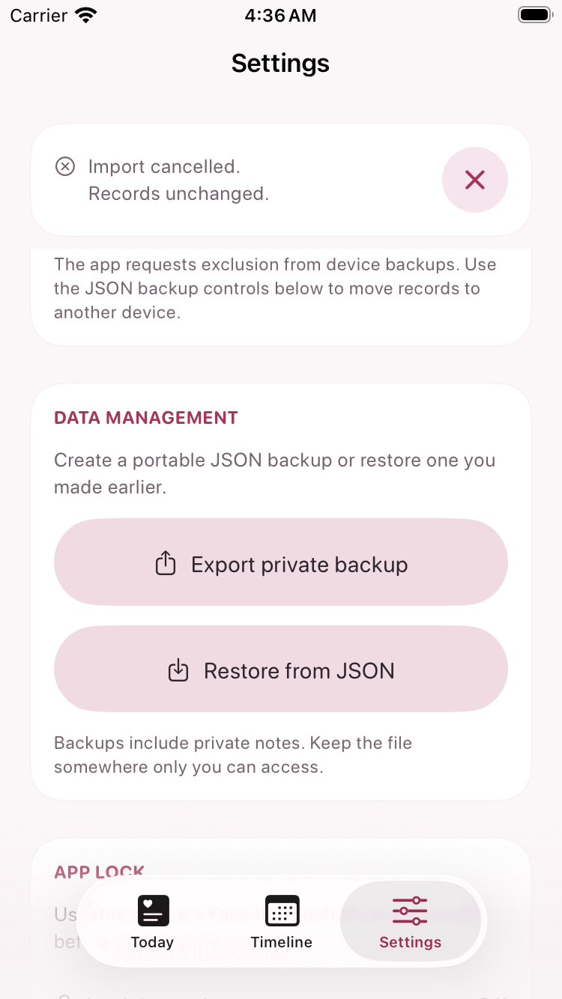
full / compact-light / Import-cancelled-en
显示 750 × 1334；原始像素 750 × 1334；EXIF 1
7a6c2fd196623f54ec57a8eb69dae756fd930e77389b42c2c213c8f1cef86e7a
full / compact-light / Import-files-en
显示 750 × 1334；原始像素 750 × 1334；EXIF 1
09b8e2185e4400bacdeca97d1a41d3b675fa5006cf18e728cf7fc80a6fd8291d
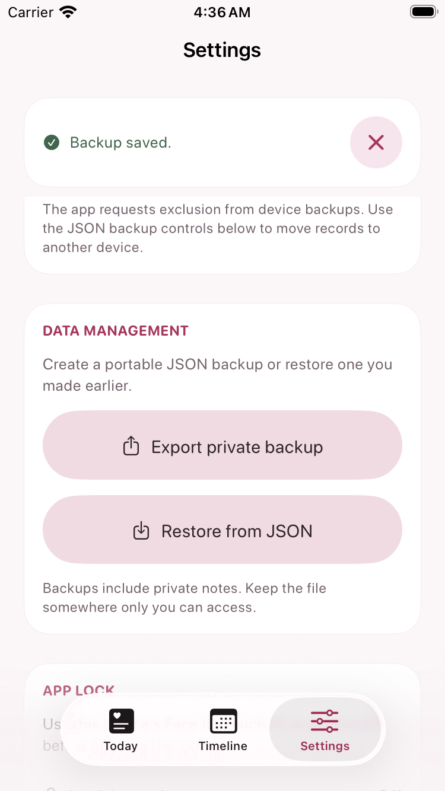
full / compact-light / Backup-exported-en
显示 750 × 1334；原始像素 750 × 1334；EXIF 1
b77bec4e78b7f192c37270e4b40c64bddf469e5827ed382c3c7644ce1766179d
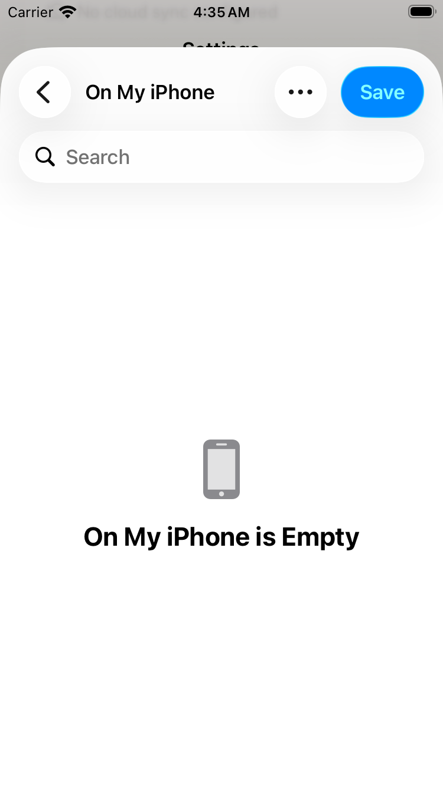
full / compact-light / Export-files-en
显示 750 × 1334；原始像素 750 × 1334；EXIF 1
948a4279fdf876023b215ad861a915815e9047ad5df0530365f43ca9fd19662b
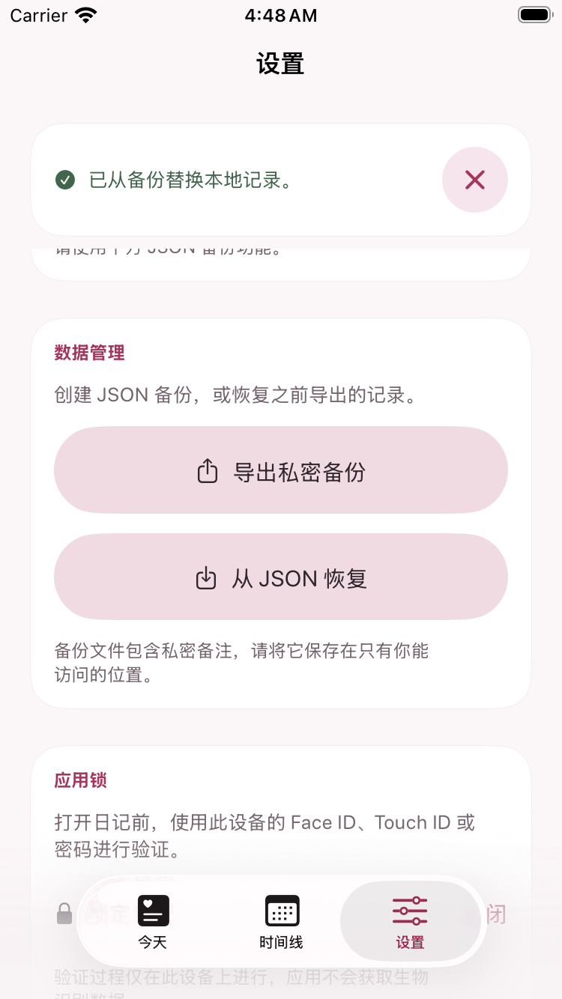
full / compact-light / Backup-restored-zh-Hans
显示 750 × 1334；原始像素 750 × 1334；EXIF 1
d7fdf1e94ad7a02b22610338da22358cfd0c51a00c6b04b40032afb9695ebc3e
full / compact-light / Backup-replace-zh-Hans
显示 750 × 1334；原始像素 750 × 1334；EXIF 1
12fe0c6f94f939e63fa117cac99756c9ffaa6471121ace8ce4cb02813f3e80f4
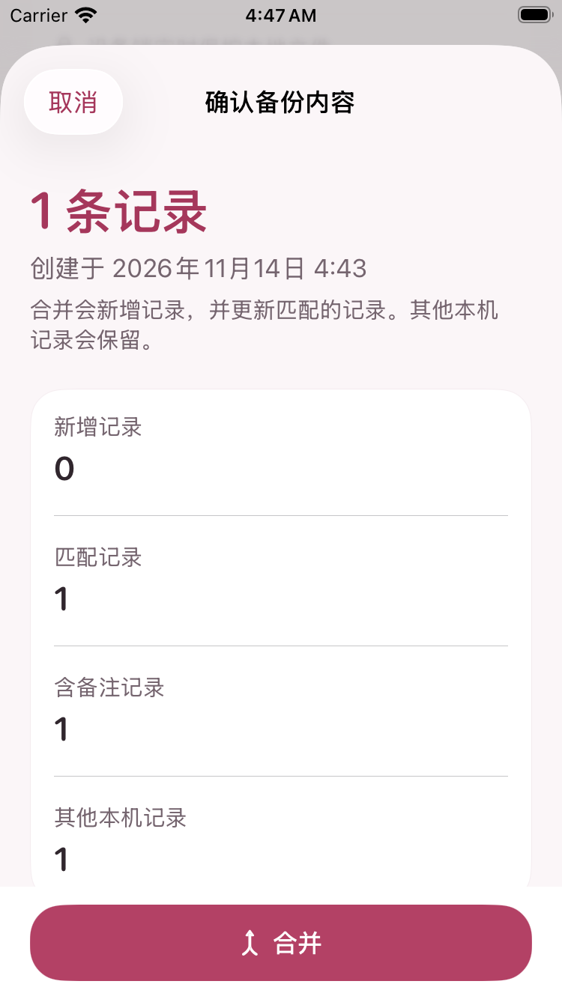
full / compact-light / Replace-review-zh-Hans
显示 750 × 1334；原始像素 750 × 1334；EXIF 1
c98abfdc4ed59ef5cc7023b54601b3c9308d0af9e0a591a07219beca81a8a3ef
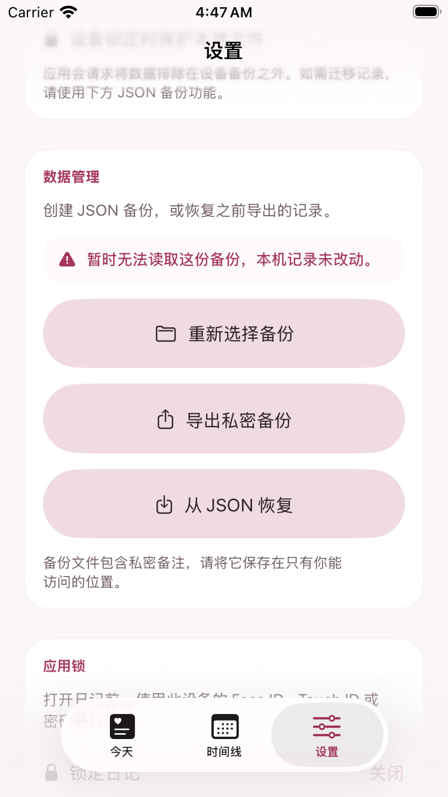
full / compact-light / Import-recovery-1-zh-Hans
显示 750 × 1334；原始像素 750 × 1334；EXIF 1
b4dd840d2a091f1c0212a00c2fad6454b8c9d950386169d03ddb0e56e05b9cca
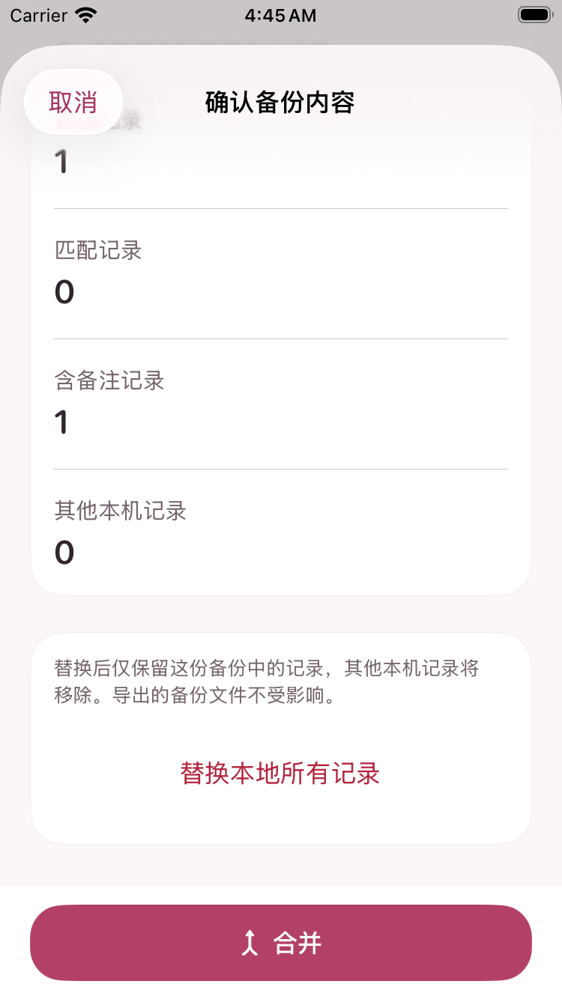
full / compact-light / Backup-review-controls-zh-Hans
显示 750 × 1334；原始像素 750 × 1334；EXIF 1
6443485566b207262ba0df0a977e61a2e949c7fdfa388084f6ca530875222897
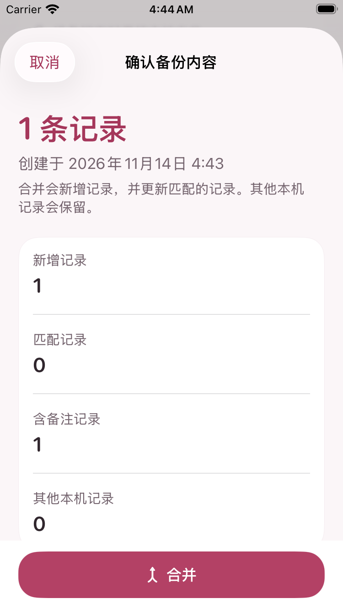
full / compact-light / Backup-review-zh-Hans
显示 750 × 1334；原始像素 750 × 1334；EXIF 1
6acebc35d433407c67cce4c57a59a6b6cf7ceb0500b039a2ce68d91400285e3c
full / compact-light / Import-cancelled-zh-Hans
显示 750 × 1334；原始像素 750 × 1334；EXIF 1
c2d27e7e4d4cf7e3401ba745e02c63c8f1e250d5525de4e56632675cb5137b9a
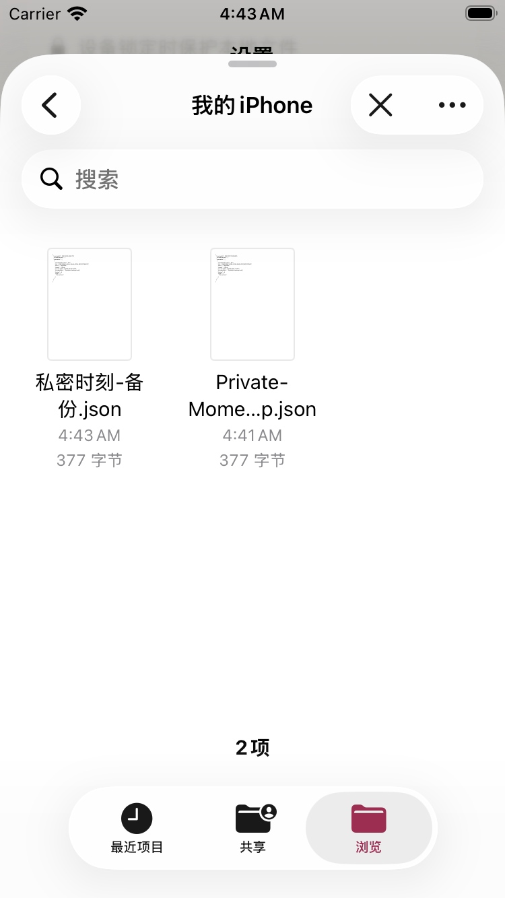
full / compact-light / Import-files-zh-Hans
显示 750 × 1334；原始像素 750 × 1334；EXIF 1
d8fbc4f4cb746bb30634bd8a232247d6d038cdd8cfc21140bc2dd4b871b6b1bb
full / compact-light / Backup-exported-zh-Hans
显示 750 × 1334；原始像素 750 × 1334；EXIF 1
2a7c6607b03343f573cca6390c600e4f81f23b78f102569b44bf2205d31fd1dd
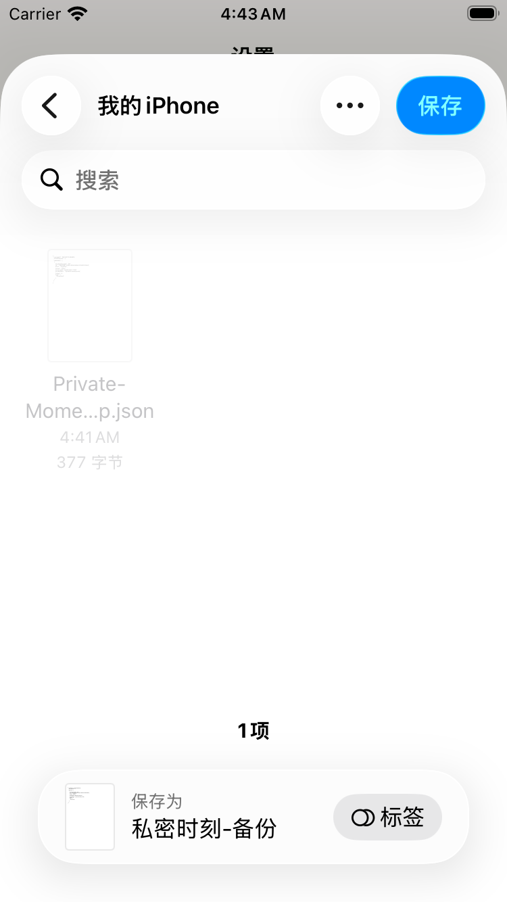
full / compact-light / Export-files-zh-Hans
显示 750 × 1334；原始像素 750 × 1334；EXIF 1
cc30339b387140bf97356bd73d2c174328297fdd5821f70f40013affffdc7770
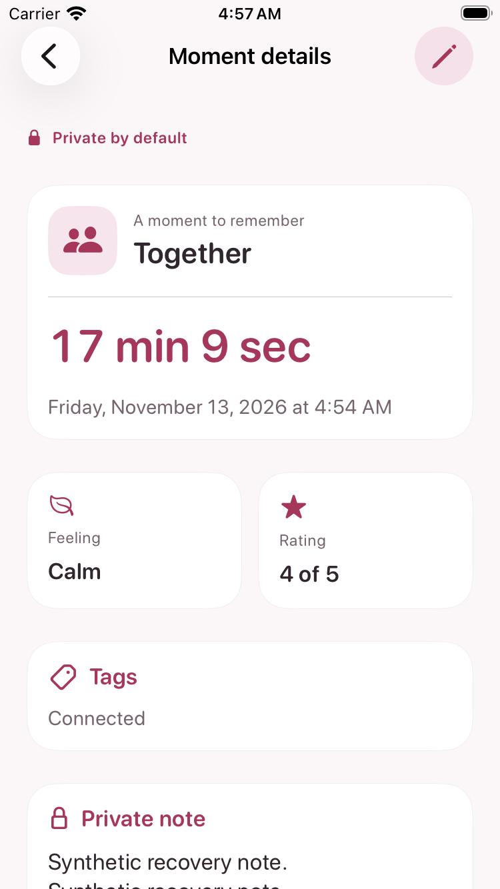
full / compact-light / Long-detail-top-en
显示 750 × 1334；原始像素 750 × 1334；EXIF 1
dd1b4c0f99eec5f82d6b140fe1937fe19e75b7ee1bdf286bc0c1fefab781ffdd
full / compact-light / Today-filter-empty-en
显示 750 × 1334；原始像素 750 × 1334；EXIF 1
f33496240d42c5960c5905f764473f48eba7433cbc689db5ee943737d3bedce0
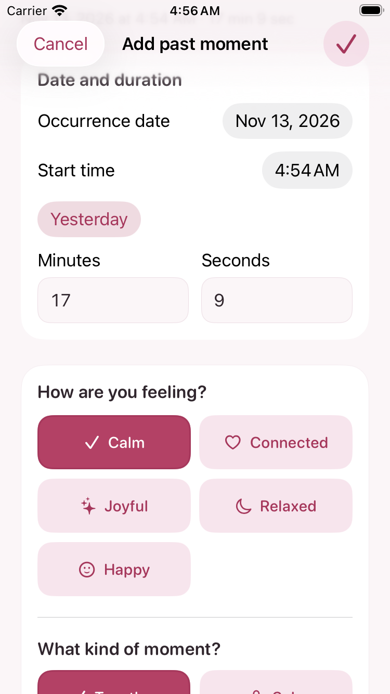
full / compact-light / Manual-entered-en
显示 750 × 1334；原始像素 750 × 1334；EXIF 1
1823018dac5287c95e6711eb862f98b0189c080b1cd8a413672b38c23869fe09
full / compact-light / Lock-recovery-zh-Hans
显示 750 × 1334；原始像素 750 × 1334；EXIF 1
cef2364fd55c8f8916d84f5ed36860aa0e0daf2f96a115faf9c740ca9853b09a
full / compact-light / Save-recovery-zh-Hans
显示 750 × 1334；原始像素 750 × 1334；EXIF 1
f14ba8a15b59834bf555b172473ec82d28030c520f83e7e06d5d3c31e34dbc88
full / compact-light / Recap-controls-zh-Hans
显示 750 × 1334；原始像素 750 × 1334；EXIF 1
ba0f42124f141f5e27e6498a45b4458a1e1aa579f457ea00f7c53c15c0dda0b5
full / compact-light / Manual-note-retained-zh-Hans
显示 750 × 1334；原始像素 750 × 1334；EXIF 1
83aca33a13a8d8f4c06fd34fa1b83efd9db2c27b49ac170158cedb8fe090cdeb
full / compact-light / Today-zh-Hans
显示 750 × 1334；原始像素 750 × 1334；EXIF 1
a27cb9569862b6405c17e68fd61854d1e22f2e9f459d01e24ea2f86ee4d3686c
full / compact-light / Lock-recovery-en
显示 750 × 1334；原始像素 750 × 1334；EXIF 1
37e29ff020a2049fab63fe6c213a566a4c1a29cf234f3267910325667367efd2
full / ipad-light / Backup-restored-en
显示 2064 × 2752；原始像素 2064 × 2752；EXIF 1
0daa711427e72385576cc55580131cdfff3c20e3e88d51357fabeb52f29eb33c
full / ipad-light / Backup-replace-en
显示 2064 × 2752；原始像素 2064 × 2752；EXIF 1
a4cd2470434b66fb8d39072413f8e4f830cbd24018438494fa4f4efa72b15872
full / ipad-light / Replace-review-en
显示 2064 × 2752；原始像素 2064 × 2752；EXIF 1
02a43d1005e092004567b56bbfb0e459f75c98050c06171d10c90c49d8a44955
full / ipad-light / Backup-review-controls-en
显示 2064 × 2752；原始像素 2064 × 2752；EXIF 1
d268e56326a1b7f7caeb02f4e1e4a43cef43a7b5a6329477411659994618d544
full / ipad-light / Backup-review-en
显示 2064 × 2752；原始像素 2064 × 2752；EXIF 1
383b376c239e4c690a0c8f6a70f2f474c07d7fe112b9aeb122096dad396c98a0
full / ipad-light / Import-cancelled-en
显示 2064 × 2752；原始像素 2064 × 2752；EXIF 1
8f01ff7df43659c5d284ed96b001e7d32d9e30e91b4f7dc50afbfb0330aaafce
full / ipad-light / Import-files-en
显示 2064 × 2752；原始像素 2064 × 2752；EXIF 1
98c4a947e66d162ea19541d8526f541956119d799ddc560c20fa52805f81bcfb
full / ipad-light / Backup-exported-en
显示 2064 × 2752；原始像素 2064 × 2752；EXIF 1
d16df0c52983029c9ac40081594348e792254c0111fa24c58447693485a63be1
full / ipad-light / Export-files-en
显示 2064 × 2752；原始像素 2064 × 2752；EXIF 1
c9a6afc8d844c26737d527c90a6f294f09f88bb9b96ab8b053bc252455884a98
full / ipad-light / Rotation-relaunched-portrait-zh-Hans
显示 2064 × 2752；原始像素 2064 × 2752；EXIF 1
67672e80a2190dd258aa53605d3cff22dcbab1bf77a783e871a9e91dea864397
full / ipad-light / Rotation-timer-portrait-zh-Hans
显示 2064 × 2752；原始像素 2064 × 2752；EXIF 1
82844314869181c8c1178dc4534a9f7a1cb1a20b7d8c90814f16ad4b66daab37
full / ipad-light / Rotation-settings-landscape-zh-Hans
显示 2752 × 2064；原始像素 2064 × 2752；EXIF 8
a2dfc5c20671a1eb4c2ff9174bfe378ef59cc86677088e23310a7251c7a592a7
full / ipad-light / Rotation-detail-portrait-zh-Hans
显示 2064 × 2752；原始像素 2064 × 2752；EXIF 1
fc8fc133b15b9e6c458b50d7f1848491284bac43cb102cd01ea80b9fecb0e3e1
full / ipad-light / Rotation-detail-landscape-zh-Hans
显示 2752 × 2064；原始像素 2064 × 2752；EXIF 6
71e90f03c2621fa6d966ed9ecb9e74aca5c706e46da15b9bbe81e3529bcd65f7
full / ipad-light / Rotation-timeline-landscape-zh-Hans
显示 2752 × 2064；原始像素 2064 × 2752；EXIF 8
fcb6dd4ed50ac9458357e9cf43fffa949641d359ac430e3b2fb99f13cc2e23c7
full / ipad-light / Rotation-today-landscape-zh-Hans
显示 2752 × 2064；原始像素 2064 × 2752；EXIF 8
f7e4b075728b0c9eba15d0c0431d922b3eef99ca8e43a6e9397154ab514785e9
full / ipad-light / Rotation-draft-portrait-zh-Hans
显示 2064 × 2752；原始像素 2064 × 2752；EXIF 1
fb170c98c09d9cc9ce290eb1c096902ad1b757504b15407be588f9728ebc39ff
full / ipad-light / Rotation-discard-confirm-zh-Hans
显示 2752 × 2064；原始像素 2064 × 2752；EXIF 8
b258705a39af5f19e3683a119736ec2b63c11a7bb23fdd6f40b365f09e98b092
full / ipad-light / Rotation-draft-landscape-zh-Hans
显示 2752 × 2064；原始像素 2064 × 2752；EXIF 8
b129fc619b86a7b00c48f5fb88558f40db1ac053734dd5bd27ad6439a90f1430
full / ipad-light / Rotation-relaunched-portrait-en
显示 2064 × 2752；原始像素 2064 × 2752；EXIF 1
434658ff86650ef78f9f1b4ad1390e9cb8249051a0812ab211c9977f15b67e43
full / ipad-light / Rotation-timer-portrait-en
显示 2064 × 2752；原始像素 2064 × 2752；EXIF 1
32e77c743e04ddac34e9e7f23dec7f577c979699a33f98f46cb810dbac52b586
full / ipad-light / Rotation-settings-landscape-en
显示 2752 × 2064；原始像素 2064 × 2752；EXIF 8
56b1e5d32f67309085f89f5551adea46272d9f4edddfe81d75e6959e88df0d07
full / ipad-light / Rotation-detail-portrait-en
显示 2064 × 2752；原始像素 2064 × 2752；EXIF 1
5b86b7f3b96cb7e2e63306b6b3b2a076719bde2953f9f6b92eebd187a40eb804
full / ipad-light / Rotation-detail-landscape-en
显示 2752 × 2064；原始像素 2064 × 2752；EXIF 6
47188dc66654aacd35066bef78bf9fafca29a0c6099377502fbe8a5337c36aca
full / ipad-light / Rotation-timeline-landscape-en
显示 2752 × 2064；原始像素 2064 × 2752；EXIF 8
63d913e3064843427b4acd64431377d9e4c14cf2bffcc2923b9833c4592d7476
full / ipad-light / Rotation-today-landscape-en
显示 2752 × 2064；原始像素 2064 × 2752；EXIF 8
99aec25c3bed040f0de25525a78f78dcfb0127e37b3f4845ed0baf921ab78f38
full / ipad-light / Rotation-draft-portrait-en
显示 2064 × 2752；原始像素 2064 × 2752；EXIF 1
1bbe926a5fe3378d1d1d3b31856856e699af916889ce4a256d3469c6b1b0a39a
full / ipad-light / Rotation-discard-confirm-en
显示 2752 × 2064；原始像素 2064 × 2752；EXIF 8
181aad87f1e55343fe0d836dd6316982c21e768bad174dba2d6b8abd6b3d7727
full / ipad-light / Rotation-draft-landscape-en
显示 2752 × 2064；原始像素 2064 × 2752；EXIF 8
523911bc2f404e224b485eebb36fb7ace71ab5657cb67a40e6862ee7ff001ce6
full / ipad-light / Lock-recovery-zh-Hans
显示 2064 × 2752；原始像素 2064 × 2752；EXIF 1
502bf65ec28fb7a067b720754d9db50dca1ac953fb840282e3474ee3601456a3
full / ipad-light / Save-recovery-zh-Hans
显示 2064 × 2752；原始像素 2064 × 2752；EXIF 1
d0dbfdb208c9ae9d51aec0bfe355d228882e505608aeff654d173affd93200e3
full / ipad-light / Recap-controls-zh-Hans
显示 2064 × 2752；原始像素 2064 × 2752；EXIF 1
590fdf16b22648b22bf4ab98a4213f6869dd116a8835cca6cd852943eb994b59
full / ipad-light / Manual-note-retained-zh-Hans
显示 2064 × 2752；原始像素 2064 × 2752；EXIF 1
beb04d99acb55c6b06b5b926ee44646cbd54cf5dbe9e6fe6d6d9b157eef023df
full / ipad-light / Today-zh-Hans
显示 2064 × 2752；原始像素 2064 × 2752；EXIF 1
a36437a7e799df19037f88fc7a216ed435fc08ebff69c4eec59813cd60e68f52
full / ipad-light / Lock-recovery-en
显示 2064 × 2752；原始像素 2064 × 2752；EXIF 1
6a4aa233f5ef485942591a399f9d431b4b41472dae6045a4daf0172ea9a13415
full / phone-dark / Backup-restored-en
显示 1206 × 2622；原始像素 1206 × 2622；EXIF 1
1e88a427dcfbeaea02d1cc06fbbe10a70c7fc900877a473e15442f9e5acfb513
full / phone-dark / Backup-replace-en
显示 1206 × 2622；原始像素 1206 × 2622；EXIF 1
6eaf2c21d754b429dec8607d7c625ed6b576a08ce233da297f3f416b63769f84
full / phone-dark / Replace-review-en
显示 1206 × 2622；原始像素 1206 × 2622；EXIF 1
22499b16d0f4cf264a13cc17f00683e655087cbe86d025fa24e61cdc403f4646
full / phone-dark / Backup-review-controls-en
显示 1206 × 2622；原始像素 1206 × 2622；EXIF 1
260eab75adfd76be2a545d4004ef95c08bd0681699216ba6a59c321f66c33ce7
full / phone-dark / Backup-review-en
显示 1206 × 2622；原始像素 1206 × 2622；EXIF 1
d8edaeeffc54c49c5b8e353ac640e93fdf3e2b8f004017568658ac81b29a1fa2
full / phone-dark / Import-cancelled-en
显示 1206 × 2622；原始像素 1206 × 2622；EXIF 1
3fdc13096941a038b40d450c6375cac3d922c8d4338e6ca695c476f0b7e1a627
full / phone-dark / Import-files-en
显示 1206 × 2622；原始像素 1206 × 2622；EXIF 1
3a6aa8bbf453df5dd1c9ed6d764639b7ba8e09f986bbd31fabe0bb48dae87b68
full / phone-dark / Backup-exported-en
显示 1206 × 2622；原始像素 1206 × 2622；EXIF 1
685b22ab7d60c5e2344350f03706eddcc11d2ae5e21598ceddc67e8b605e31b9
full / phone-dark / Export-files-en
显示 1206 × 2622；原始像素 1206 × 2622；EXIF 1
fe484f2dcf7b6676453ef8fc4a6d61240b45a6c2e273c8cbd07aa76736933858
full / phone-dark / Lock-recovery-zh-Hans
显示 1206 × 2622；原始像素 1206 × 2622；EXIF 1
6004de7c4092c8036dc5e57d594d38ee3bd3b8ba174952f5b8fbe568a1241cfa
full / phone-dark / Save-recovery-zh-Hans
显示 1206 × 2622；原始像素 1206 × 2622；EXIF 1
473dc77ccaf572e745b8c5865087715972f3979a825e0ce1a5917b69531ddbc0
full / phone-dark / Recap-controls-zh-Hans
显示 1206 × 2622；原始像素 1206 × 2622；EXIF 1
bc8cf76c223c64c8f3905431f22e2f93792bc4136273e4e6dcd49a2a32e7419e
full / phone-dark / Manual-note-retained-zh-Hans
显示 1206 × 2622；原始像素 1206 × 2622；EXIF 1
907e63f3a68da479d38bd9106010c3b08b83642b133e1dbd6d83eb989129a399
full / phone-dark / Today-zh-Hans
显示 1206 × 2622；原始像素 1206 × 2622；EXIF 1
13ba386b24dca6938d893edd74dac7a6f402410711403a377807a607cbc53990
full / phone-dark / Lock-recovery-en
显示 1206 × 2622；原始像素 1206 × 2622；EXIF 1
61a5ae0ca0e52c7b24240e379ce3d483ab480b828654af6a03bad8571c6eff0e